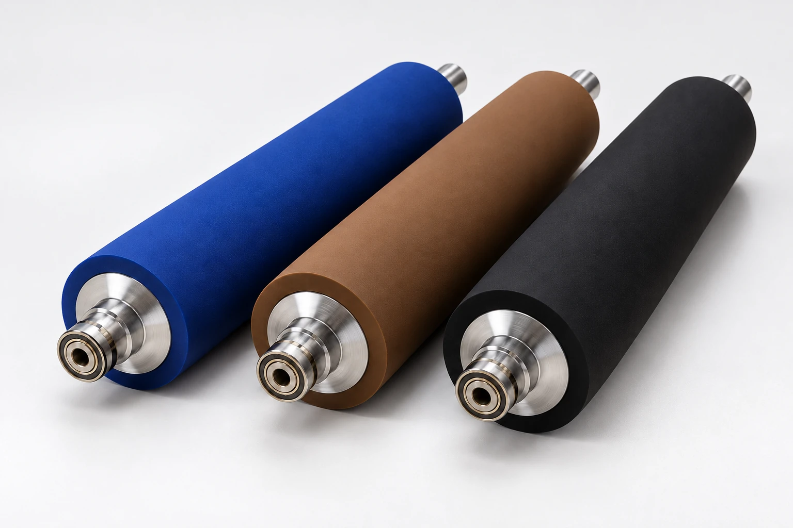

MEIWA ROLLER RANGE / 01
Printing rubber
rollers.
Meiwa’s printing portfolio covers inking, dampening and specialty rollers for sheet-fed offset, commercial and newspaper web, gravure, flexo and label presses. The named families below group the material options.
View material families
01 RANGE & APPLICATIONS · 08 ENTRIES
Printing material families
Select the roller family that matches your press, ink system and application. Specifications are confirmed per enquiry.
| Material family | Application | Performance focus |
|---|---|---|
| BZ · Black Zest | ApplicationSheet-fed & rotary offset inking |
Performance focus Designed for low heat generation and stability during high-speed printing on conventional inks. |
| UV Summit II | ApplicationUV offset inking | Performance focus Addresses UV-ink requirements with stable material properties and resistance to surface hardening. |
| BW · Black Web | ApplicationCommercial web offset | Performance focus Low heat generation and tear resistance for high-speed commercial web presses. |
| BN · Black News | ApplicationNewspaper rotary | Performance focus Low heat generation and tear resistance tuned for newspaper rotary presses. |
| NCD-III / IV | ApplicationHigh-speed web offset | Performance focus Addresses plate-edge scarring on high-speed web presses. |
| MD | ApplicationDampening / water transfer |
Performance focus Focused on water retention and transfer. Fountain solution and cleaning chemistry inform selection. |
| Aquaphilic | ApplicationDampening / chemical resistance |
Performance focus Addresses chemical and water resistance, helping slow crazing and ageing. |
| Gravure, flexo & label | ApplicationImpression cylinders Furnisher rolls Fountain rolls |
Performance focus Impression-cylinder materials address abrasion, ozone and static-control requirements. Furnisher and fountain rolls support consistent ink lay-down. |
Product families from the supplied presentation; terminology checked against Meiwa’s printing range. Suitability and specifications are confirmed per enquiry.
02 BEFORE YOU ENQUIRE
Start with the operating conditions.
These details help NUTECH discuss the right specification for your application.
- 01
Your press
Manufacturer, model and roller position.
- 02
Your ink system
Conventional or UV inks, fountain solution and cleaning chemistry.
- 03
Your specification
Core and finished dimensions, surface finish and hardness.
Material suitability, specifications and availability are confirmed for each enquiry.
Specify the right roller.
Start with your press.
Share press manufacturer and model, roller position, ink system, dimensions and hardness requirements to discuss the suitable family.